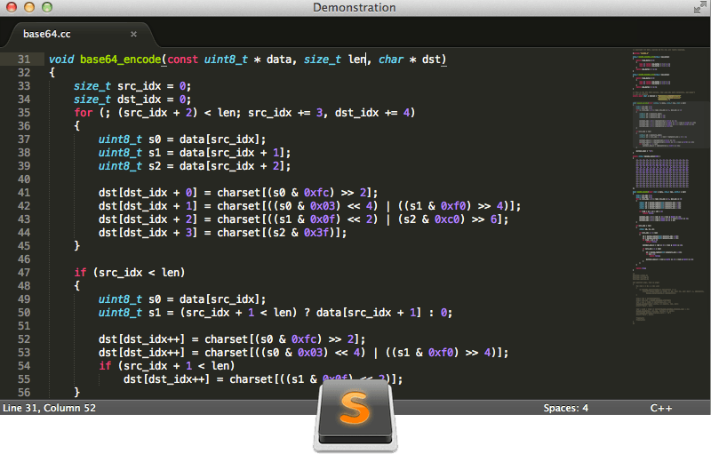
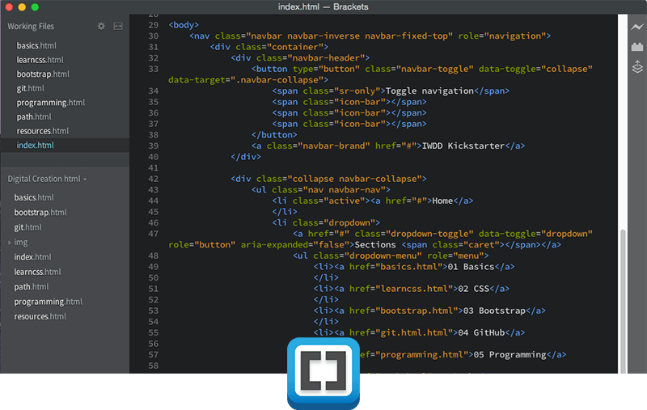

Recommended Text Editors
Sublime Text 3
Features that You'll Love
Multiple Cursors
{cmd}+{left click} on Mac or [ctrl]+[left click] on PC to place place multiple cursors and start editing. You'll find its usefulness in many situations when coding.
Quickly Select Identical Items
Press {cmd}+{d} or [ctrl]+[d] a few times to select identical strings, making multiple cursor edit even easier. You'll miss this feature a lot when unavailable on another editor.
Command Palette
{cmd}+{shift}+{P} on Mac or [ctrl]+[shift]+[P] on PC to bring up command palette and start typing command. The demo shows setting syntax by just typing 'set php', which selects 'Set Syntax: PHP' and hitting enter sets the syntax for the file to PHP with proper syntax highlight. There are many other command available, one other that is commonly used is 'install package' that I'll show in the plugins section below.
Goto Anything Command
{cmd}+{p} or [ctrl]+[p] to bring up the Goto command and start typing file name and you can quickly switch between files in your working folder. Your hands don't even need to leave your keyboard when you're coding.
Learn more
As you can see these are very powerful features that simple text editors does not include. For more detail explanations, you can check out the sublime text home page as well as its support page and refer to its robust documentations.
Brackets
Features that You'll Love
LIVE PREVIEW
Live preview is the sole reason you should use Brackets. It makes seeing the appearance of the website so much easier; also a great tool for beginner understanding how html and css work together by seeing the code changing the view live along with element highlight. To activate, click on the lightning-bolt icon on the top-right.
Quick Edit
Another unique feature from Brackets is quick edit. Right click on a html tag or a class / id, or use keyboard shortcut {cmd}+{E} or [ctrl]+[E] to quickly edit CSS property even tho they're in the linked external CSS file.
Learn more
Brackets is an open source project developed by Adobe, the company that makes Photoshop. The features demostrated above are the two that stand out the most from the rest of the editors, and later down the road there will be full integration with Photoshop design file that generate CSS code hints. Again, to learn more, check out their official page.